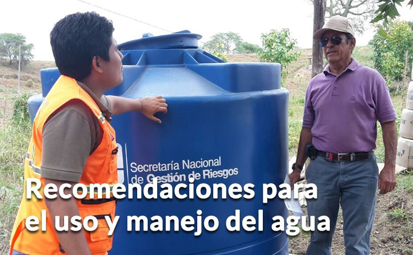

Guarda agua limpia en recipientes tapados para tu consumo, el de tu familia y de tus animales y mascotas.
Guarda agua limpia en recipientes tapados para tu consumo, el de tu familia y de tus animales y mascotas.|  |
Guarda agua limpia en recipientes tapados para tu consumo, el de tu familia y de tus animales y mascotas.
Si el agua estuvo en contacto con ceniza, no la consumas ni permitas que tus animales y mascotas la consuman.
Mantén limpios los drenajes por donde normalmente circula el agua de lluvia y los tubos que conducen el agua servida.
No botes la ceniza por el sistema de alcantarillado. En contacto con agua, la ceniza se vuelve dura y puede taponarlo.
Verifica que las cañerías y conductos estén limpios.